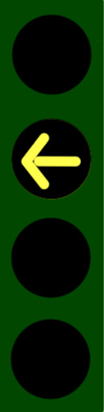

駕駛人行為測驗
測驗規則
- 總共21題，每題均為判斷號誌含意(判斷號誌是保護左轉、非保護左轉、不能左轉)單選擇題
- 每題均為不同情境與不同號誌組合，其中包含現有號誌(不另外解釋)，以及引入獨立左轉號誌，說明如下表
- 進入題目頁面後，駕駛模擬影片會自動播放
- 影片播放前3秒號誌為全黑，3秒後依顯示號誌點擊選項按鈕作答。本測驗將會計時反應時間，請在測驗全程保持專注，並在看到號誌理解後迅速作答。
- 請根據號誌所傳達的指令做選擇
| 主要號誌 | 圖 | 左轉專用號誌 | 圖 | 號誌含意 | 已閱讀 | |
| (a) | 直行右轉號誌 | 黃色箭頭長亮 |  | 非保護左轉(需讓行) | ||
| (b) | 直行右轉號誌 | 黃色箭頭閃爍 | 非保護左轉(需讓行) | |||
| (c) | 直行右轉號誌 | 綠色箭頭閃爍 | 非保護左轉(需讓行) | |||
| (d) | 直行右轉號誌 | 綠色圓型閃爍 | 非保護左轉(需讓行) | |||
| (e) | 直行右轉號誌 | 綠色箭頭長亮 | 保護左轉 | |||
| (f) | 直行右轉號誌 | 綠色圓型長亮 | 保護左轉 | |||
| (g) | 紅燈號誌 | 綠色箭頭長亮 | 保護左轉 | |||
| (h) | 紅燈號誌 | 綠色箭頭長亮 | 保護左轉 |